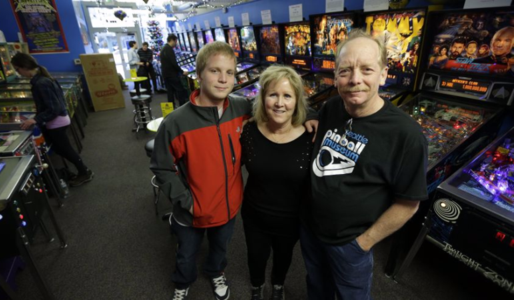

Seattle Pinball Museum

The Seattle Pinball Museum was born from a desire to share the games with other local collectors. Without help in the beginning from the local collector community, the Seattle Pinball Museum would not have succeeded.
The Seattle Pinball Museum opened in late August 2010. The concept was to provide vintage pinball machines as an interactive display of kinetic art. During our search for an affordable venue, we came across a program called Storefronts Seattle. Storefronts Seattle is a program that pairs empty storefronts and juried artists to revitalize a neighborhood. Chinatown and Pioneer Square were the first neighborhoods in the program for Storefronts Seattle. An application was submitted and ten juried artists were selected. The Seattle Pinball Museum was chosen as a creative enterprise. The initial grant was for a three-month stint at a vacant storefront in Seattle's Chinatown / International District. Storefronts granted us an extension of five months and then Seattle Pinball Museum transitioned to a stand alone, independent business in June 2011. The collection has grown to include games as early as 1934 to present day games produced by Jersey Jack Pinball, Dutch Pinball, Spooky Pinball, VP Cabs and Stern Pinball.

Find Us on Facebook
508 Maynard Ave S Seattle, WA 98104 (206) 623-0759